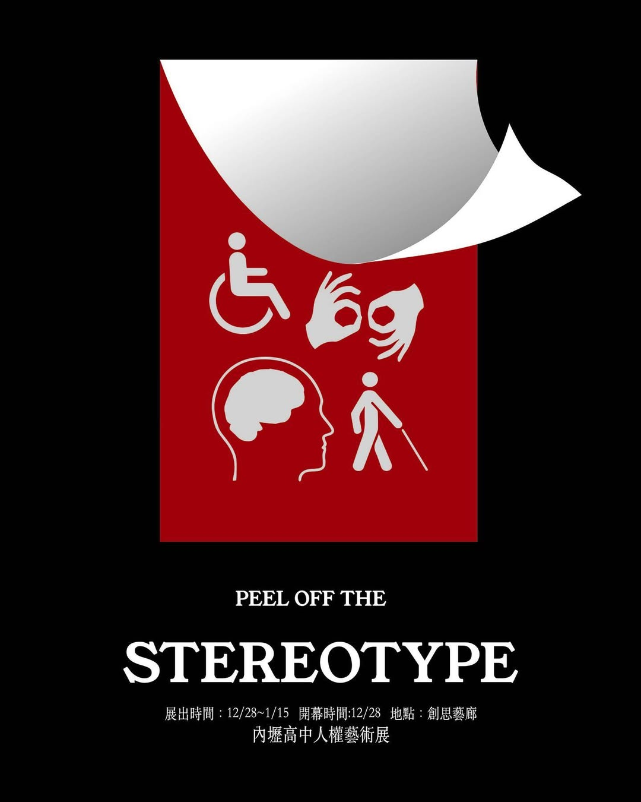
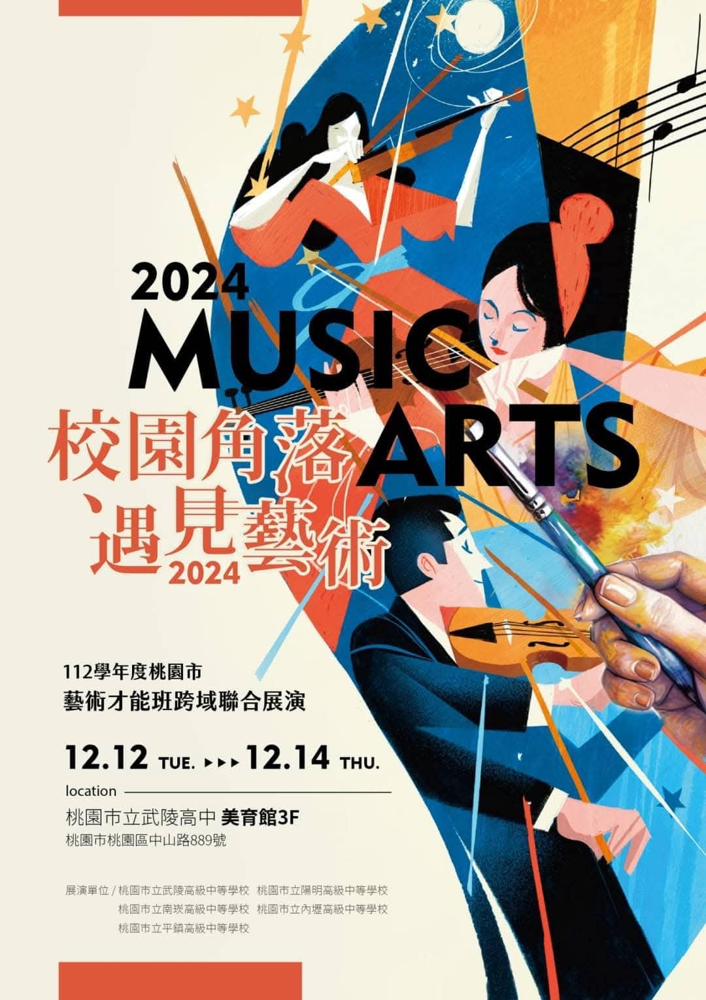
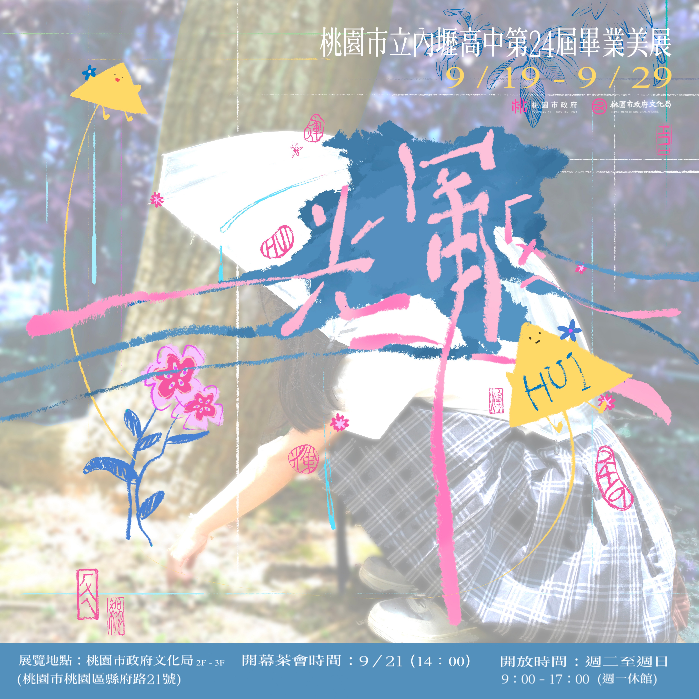
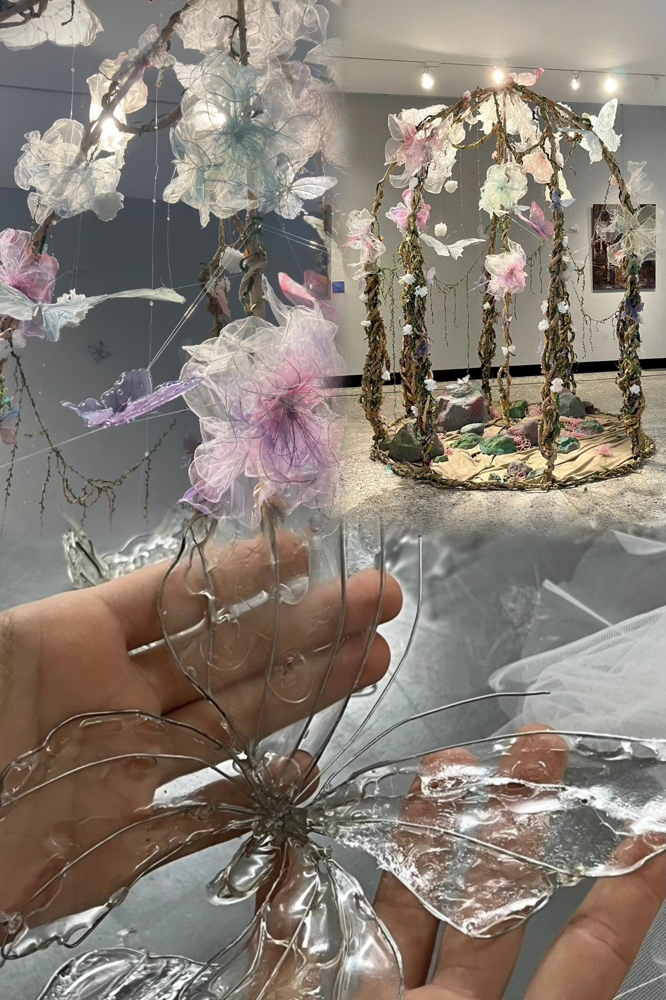

<!DOCTYPE html>
<html lang="zh-Hant"></html>
<head>
<title>展覽經驗 exhibition experience
</title>
<meta charset="UTF-8">
<meta name="viewport" content="width=device-width, initial-scale=1">
<link rel="stylesheet" href="https://www.w3schools.com/w3css/5/w3.css">
<style>
body {font-family: "Times New Roman", Georgia, Serif;}
h1, h2, h3, h4, h5, h6 {
  font-family: "Playfair Display";
  letter-spacing: 5px;
}
/* Extend the width of the footer button */
.footer-button {
    display: block;
    width: 100vw; /* Full viewport width */
    margin-left: calc(-50vw + 50%); /* Center and extend to edges */
    text-align: center;
    padding: 10px 0;
    background-color: #f1f1f1; /* Adjust background color if needed */
  }

  /* Ensure the footer is a full-width rectangle */
  footer {
    width: 100vw; /* Full viewport width */
    margin-left: calc(-50vw + 50%); /* Center and extend to edges */
    background-color: #f5f2ed; /* Adjust background color if needed */
    padding: 20px 0; /* Ensure consistent padding */
  }

  .footer-button {
    text-align: center;
    color: #000; /* Adjust text color if needed */
    text-decoration: none;
  }

  /* Add background color to the '看更多' button */
  .more-button {
    background-color: #d2b48c; /* Light brown color */
    color: #000; /* Black text color */
    padding: 10px 20px;
    border-radius: 5px;
    text-decoration: none;
    display: inline-block;
  }

  .more-button:hover {
    background-color: #c2a378; /* Slightly darker brown on hover */
  }
</style>
</head>
<body>

<!-- Navbar (sit on top) -->
<!-- Navbar (sit on top) -->
<div class="w3-top">
  <div class="w3-bar w3-white w3-padding w3-card" style="letter-spacing:4px;">
    <a href="#home" class="w3-bar-item w3-button">展覽經驗 exhibition experience</a>
    <!-- Right-sided navbar links. Hide them on small screens -->
    <div class="w3-right w3-hide-small">
      
    </div>
  </div>
</div>


<!-- Page content -->
<div class="w3-content" style="max-width:1100px">
  <!-- 新增橫向三圖區塊 -->
  <div style="background:#f5f2ed;width:100vw;position:relative;left:50%;transform:translateX(-50%);margin-top:32px;padding:40px 0 32px 0;">
    <div class="w3-row w3-center" style="display:flex;justify-content:center;gap:48px;">
      <div style="display:flex;flex-direction:column;align-items:center;">
      <br> <br>
        <div style="margin-top:14px;font-size:20px;color:#444;font-weight:500;">人權x美術</div><br><br>
      </div>
      <div style="display:flex;flex-direction:column;align-items:center;">
        <br><br>
        <div style="margin-top:14px;font-size:20px;color:#444;font-weight:500;">音樂x美術</div><br><br>
      </div>
      <div style="display:flex;flex-direction:column;align-items:center;">
      <br><br> 
        <div style="margin-top:14px;font-size:20px;color:#444;font-weight:500;">美術x策展</div><br><br>
      </div>
    </div>

  </div>

  <!-- About Section -->
  <div class="w3-row w3-padding-64" id="about">
    <div class="w3-col m6 w3-padding-large w3-hide-small">
    
    
    </div>
  

    <div class="w3-col m6 w3-padding-large">
      <h1 class="w3-center">人權藝術展
      </h1><br>
      <p class="w3-large"> </p> 
      <p class="w3-large w3-text-grey w3-hide-medium"><br>世界之所以美麗，是因為有各式各樣的人，用不同的顏色填滿它。<br><br>
在社會的隱蔽角落，有些聲音被標籤覆蓋，有些靈魂在流言中掙扎。本次展覽由公民課的權利思辨出發，結合素描、彩繪與設計專業，進行了一場跨領域的藝術實踐。<br><br>
我們在展場中築起一座屏風，邀請觀者走入身心障礙者的內心世界。屏風上我們利用了噴漆及丙烯筆來呈現身障者的內心獨白，以及他們常聽到的那些不友善的聲音。也有那些打著「關心」名義、實則傷人的無形利刃。我們誠摯地邀請每一位觀眾，在此空間中靜心思考：我們曾給予的是溫暖，還是偏見？<br><br>
讓我們拿起尊重與愛的畫筆，一起構建那道屬於平等的彩虹。

    </div>
  </div>


  <!-- About Section -->
  <div class="w3-row w3-padding-64" id="about">
    <div class="w3-col m6 w3-padding-large w3-hide-small">
    
    </div>

    <div class="w3-col m6 w3-padding-large">
      <h1 class="w3-center">藝術才能班跨域展演
</h1><br>
      
      <p class="w3-large"> </p> 
      <p class="w3-large w3-text-grey w3-hide-medium"><br>這是一場關於「心靈碰撞」的藝術實驗。當音樂遇上美術，原本抽象的聲音擁有了具體的線條，靜止的色彩也隨之躍動了起敏銳的色彩直覺，捕捉音樂中流動的情緒，將每一抹音色化為具體的視覺呈現。
<br><br>
同一首曲子，在不同的靈魂裡，折射出完全不同的色彩與形狀。我們邀請您在校園的角落遇見藝術，見證這場視覺與聽覺的極致饗宴。<br><br>
</p>
 <p class="w3-large w3-text-grey w3-hide-medium"><br><br>〈七分熟〉<br><br>彭新展、宋卉芸、林芮綺、林睿怡、陳若芸、楊惠心/<br>2023/水墨、水彩、廣告顏料/138 x 69 cm<br><br>在這亂世中，加熱我微不足道的尊嚴，僅剩下淪為笑柄的價值 。
我激昂的情緒得不到發洩，統使流水貫穿，也冷靜不了。
激昂的悲、激昂的痛，化作一道道傷痕，包装我的心藏；捆綁我的頸項，囚錮我的念想，流血再流血，永不癒合。<br><br>
無形的痛扒開我的皮素，拆解我的肋骨，試圖澆熄高溫的我。<br>
我不會熄滅，我會持續加熱，直到整座池子沸騰。<br><br>
我狼狽、我不可饒恕。<br>
我澄澈、我不容踐踏。<br><br>
煮得死青蛙，熟不了我。<br><br>


</p>
    </div>
  </div>

   <!-- About Section -->
  <div class="w3-row w3-padding-64" id="about">
    <div class="w3-col m6 w3-padding-large w3-hide-small">
    

    </div>

    <div class="w3-col m6 w3-padding-large">
      <h1 class="w3-center">內壢高中24屆美術班畢業展
</h1><br>
      <p class="w3-large"> </p> 
      <p class="w3-large w3-text-grey w3-hide-medium"><br>青春是一段充滿夢想與創意的奇幻旅程，藝術則是這段旅程最美的語言。透過內壢高中第24屆美術班畢業展，我們將見證22位畢業生如何以62件藝術作品，描繪出這段充滿活力與希望的旅程。展覽涵蓋素描、水墨及書法等多元藝術領域，每一幅畫作都融合了青春的熱情與創意的火花。
<br><br>內壢高中美術班自民國88年成立以來，始終堅持學科與術科並重的教育理念，透過多元化的課程規劃，學生們在老師的指導下，充分發揮了個人的天賦和創造力。<br><br>本次展覽主題「輝 HUl」取自閩南語中「花」的諧音外，更有著熠熠生輝的光，引申充滿了明亮與耀眼，隱喻光明前程的詮釋。此次畢業展展示了學生們三年來的學習與創作成果，每一件作品都是青春的結晶，充滿了對未來的期望與夢想。

</p>
     
    </div>
  </div>

 


<!-- Footer -->
<footer class="w3-center" style="width:100vw;margin-left:calc(-50vw + 50%);background-color:#debcb1;padding:20px 0;">
  <p class="mt-4" style="margin:0;"><a href="../../index.html" style="display:block;width:100vw;margin-left:calc(-50vw + 50%);text-align:center;padding:10px 0;background-color:#debcb1;color:#000;text-decoration:none;">回首頁</a></p>
</footer>

</body>
</html>
